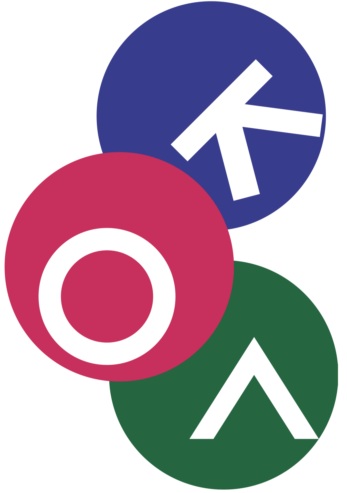

수학 심화
이산수학, 고급대수, 고급미적분 등 사고의 추상도를 끌어올립니다

이재식국어내가 어떤 고등학교에서 어떤 학생으로 성장할지 직접 설계해 보는 시간
교육과정 이해, 융합 선택, 학교 선택, 자소서 소재, 면접 답변을 하나의 준비 흐름으로 연결합니다
2022 개정 교육과정과 학교별 선택과목 구조를 이해
일반·진로·융합 선택 과목이 나의 관심 분야와 어떻게 이어지는지 확인
자사고·국제고·외고·과학고의 선발 구조와 적합도를 비교
문항을 분해하고 학생부 소재를 합격 서사로 재구성
학교별 면접 유형에 맞춘 답변 구조와 태도를 훈련
고교에서 고르는 과목은 나의 관심, 진로, 탐구 방향을 보여주는 첫 번째 기록이 됩니다
학교마다 선택과목의 폭, 융합·심화 과목의 위치, 프로젝트 과목의 비중이 다릅니다
경기북·인천·진산과학고 편제에서 반복되는 키워드는 고급 수학, 고급 과학, 실험, 과제연구입니다
이산수학, 고급대수, 고급미적분 등 사고의 추상도를 끌어올립니다
고급 물리·화학·생명과학·지구과학이 전공 탐색의 중심이 됨
물리학 실험, 화학 실험, 생명과학 실험처럼 실험 과정이 탐구의 언어가 됨
과제연구, 세미나, 주제토론은 면접에서 가장 구체적인 질문으로 연결됨
실패한 실험을 다시 설계해 본 경험, 모르는 개념을 끝까지 파고든 기록이 핵심 증거가 됩니다
| 판단 질문 | 좋은 신호 | 주의 신호 |
|---|---|---|
| 문제 해결 | 조건을 바꿔가며 여러 풀이를 비교한다 | 정답 확인에서 학습이 끝난다 |
| 탐구 태도 | 실험·관찰·기록을 반복한다 | 결과보다 활동명만 강조한다 |
| 면접 준비 | 개념을 상황에 적용해 설명한다 | 외운 정의를 그대로 말한다 |
관심 분야가 여러 개라면 주요 교과를 깊게 배우며 내 방향을 조금씩 좁혀갈 수 있습니다
전국단위와 광역단위는 경쟁 방식, 준비 부담, 일반고 동시 지원 위험이 서로 다릅니다
국제 이슈, 사회 문제, 문화 이해, 독서 경험을 자기 경험과 연결해 말하는 능력이 핵심입니다
국제정치, 국제경제, 비교문화, 사회문제 등 인문사회적 통찰을 강조
전공어와 영어, 문화 이해, 글로벌 커뮤니케이션 역량을 중심으로 설계됨
제시문을 읽고 가치 판단과 경험 연결을 짧고 논리적으로 답하는 훈련이 필요
여름에는 학교 후보를 좁히고, 가을에는 자소서를 완성하고, 겨울에는 면접 감각을 올립니다
지역별 기준일과 특성화고·과학고 흐름을 먼저 확인
생활기록부와 자기소개서 소재를 학교별로 분류
자사고·국제고·외고는 일반고 흐름과 함께 판단해야 합니다
비슷한 성적의 학생들 사이에서는 자소서와 면접에서 드러나는 준비의 일관성이 중요합니다
자기소개서에 쓴 내용은 면접에서 다시 확인됩니다. 서류와 답변의 언어가 달라지면 신뢰도가 떨어집니다
전체 경쟁률, 전형별 경쟁률, 모집 단위별 경쟁률은 각각 다른 준비 신호를 줍니다
| 확인 지표 | 해석 포인트 | 점검 질문 |
|---|---|---|
| 전형별 경쟁률 | 일반·사회통합의 체감 난도가 달라질 수 있음 | 내가 지원할 전형은 어디인가 |
| 전공별 경쟁률 | 외고는 언어 전공별 쏠림이 크게 나타남 | 전공 선택 이유가 설득되는가 |
| 전년 대비 증감 | 단순 숫자보다 상승·하락 이유가 중요함 | 올해 변수는 무엇인가 |
가고 싶은 학교, 들어가서 버틸 수 있는 학교, 지금 준비할 수 있는 학교를 따로 점검합니다
상위권 학교일수록 합격 가능성뿐 아니라 입학 후 학습량과 학교생활도 현실적으로 봐야 합니다
그 이유가 분명해야 자소서 지원동기와 면접 첫 답변이 흔들리지 않습니다
자소서, 생활기록부, 면접 답변은 따로 준비하는 것이 아니라 나를 설명하는 세 장면입니다
문장을 멋있게 꾸미기보다 학생부 경험, 학교 프로그램, 진로 계획이 자연스럽게 이어져야 합니다
스스로 세운 목표와 실행, 시행착오, 개선의 흔적
학교의 교육과정·인재상과 나의 방향성의 연결
나와 타자, 공동체 안에서 실제로 행동한 경험
자기소개서에 쓴 한 문장은 면접에서 한 질문이 됩니다
점수, 등수, 대회 실적보다 내가 무엇을 고민했고 어떻게 바뀌었는지를 보여줘야 합니다
| 피해야 할 표현 | 왜 위험한가 | 대체 방향 |
|---|---|---|
| 공인시험·교과 점수·석차 | 정량 실적 중심으로 읽힘 | 학습 목표와 개선 과정 |
| 대회 입상·자격증 | 기재 배제 사항에 해당 가능 | 문제 해결 과정과 배운 점 |
| 부모·친인척 지위 | 사회경제적 배경 암시 | 본인의 선택과 행동 |
| 학교명·개인 식별 | 블라인드 취지 훼손 | 활동의 맥락 중심 서술 |
문항이 길어 보여도 실제로는 학습, 동기, 계획, 진로, 인성의 질문으로 나눌 수 있습니다
목표 설정, 계획, 실행, 피드백
학교 특성과 나의 방향성 연결
입학 후 3년의 구체적 활용 계획
졸업 후 확장 가능한 로드맵
배려·나눔·협력·존중·규칙 준수의 실제 사례
같은 1,500자라도 학교마다 학습, 지원동기, 인성, 활동계획을 묻는 방식이 다릅니다
| 학교군 | 분량 구조 | 작성 전략 |
|---|---|---|
| 인천하늘고 | 나의 꿈과 끼, 인성 1,500자 | 학습·동기·활동·진로·인성을 하나의 흐름으로 연결 |
| 포스코고 | 300자 + 900자 + 300자 | 지원동기와 학습과정을 분리해 밀도를 높임 |
| 인천국제고 | 1,200자 + 300자 | 국제계열 관심과 인성 경험의 균형 |
| 미추홀·인천외고 | 1,000자 + 500자 | 외고 특성과 인성 사례를 분명히 구분 |
처음부터 문장을 만들기보다 문항을 나누고, 경험을 꺼내고, 가장 설득력 있는 소재를 고릅니다
요구 요소를 분해하고 빠진 항목을 체크
학생부·독서·동아리·탐구 경험을 넓게 꺼냅니다
학교와 진로를 가장 잘 설명하는 경험만 남깁니다
문단별 기능을 정하고 연결 순서를 배치
기재 금지, 추상 표현, 면접 리스크를 점검
활동 이름보다 왜 시작했고, 무엇을 바꿨고, 그 뒤 생각이 어떻게 달라졌는지가 중요합니다
관심 문제가 분명해질수록 지원동기, 활동계획, 면접 답변이 한 방향으로 이어집니다
수업 태도, 독서 선택, 동아리 활동, 갈등 해결 방식에서 반복되는 나의 패턴을 찾아봅니다
읽고 정리하고 설득하는 데 강함
질문을 세우고 증거로 확인하는 데 강함
팀의 역할을 나누고 실행을 관리하는 데 강함
상대의 입장을 읽고 조정하는 데 강함
성적 상승만 말하기보다 문제를 발견하고, 방법을 바꾸고, 다시 확인한 과정을 보여줍니다
어려웠던 개념을 어떻게 쪼개고, 어떤 자료와 방법을 써서, 다음 학습에 어떻게 적용했는지를 보여줍니다
교육과정, 동아리, 연구 프로그램 중 내 경험과 실제로 연결되는 지점을 찾아야 합니다
| 연결 대상 | 나의 증거 | 입학 후 활용 |
|---|---|---|
| 교육과정 | 관련 과목에 대한 관심과 준비 | 선택과목·심화과목 이수 계획 |
| 프로그램 | 동아리·탐구·독서 경험 | 프로젝트·연구 활동 참여 |
| 인재상 | 반복해서 드러난 태도 | 학교 공동체 안에서의 실천 |
교과, 동아리, 탐구, 진로 활동이 따로 놀지 않고 하나의 성장 경로로 이어져야 합니다
| 학년 | 핵심 목표 | 활동 설계 |
|---|---|---|
| 1학년 | 학교 적응과 기초 역량 | 필수 과목 성실 이수, 관심 동아리 탐색 |
| 2학년 | 심화 과목과 탐구 주제 | 선택과목 확장, 프로젝트·보고서 수행 |
| 3학년 | 진로 방향의 완성 | 탐구 결과 정리, 후배·공동체 기여 |
장래희망, 필요한 역량, 고교에서의 준비, 대학 계열이 자연스럽게 연결되면 강해집니다
배려, 나눔, 협력, 존중은 마음만으로 설명하지 말고 상황 속 행동과 변화로 보여줍니다
맥락을 짧게 제시
역할과 선택을 구체화
결과와 배운 점을 연결
학교 공동체 기여로 마무리
자사고, 과학고, 국제고·외고는 같은 기록에서도 중요하게 보는 포인트가 다릅니다
| 항목 | 자사고 | 과학고 | 국제고·외고 |
|---|---|---|---|
| 교과 | 주요 교과의 균형 | 수학·과학 중심 심화 | 영어와 국어·사회 흐름 |
| 창체 | 활동의 일관성 | 탐구·실험·연구 | 언어·국제·사회 관심 |
| 독서 | 진로와 연결된 폭 | 개념 확장과 문제의식 | 시사·문화·가치 판단 |
| 행특 | 태도와 공동체성 | 끈기와 탐구 습관 | 협력과 소통 역량 |
비슷한 성적의 학생들 사이에서 면접은 사고 과정, 말의 구조, 진정성을 보여주는 기회입니다
자소서와 학생부 활동의 사실성과 깊이를 확인
제시문·상황·교과 개념을 분석하는 과정 확인
학교 교육과정을 활용할 준비가 되었는지 확인
목표 학교의 방식, 나의 자소서와 학생부, 꼬리 질문까지 연결해야 답변이 흔들리지 않습니다
공통문항 유무, 구상 시간, 면접 시간을 확인
학생부와 자소서 한 문장마다 질문을 붙입니다
결론, 근거, 사례, 배운 점의 순서를 고정
왜, 어떻게, 그래서 무엇이 달라졌는지까지 답합니다
용인외대부고는 서류 기반 심층 꼬리 질문, 인천하늘고는 수학적 사고와 논리 추론이 핵심입니다
포스코고는 교과 개념을 문제 상황에 적용하는 힘, 국제고는 제시문을 자기 경험과 연결하는 힘이 중요합니다
사회 문제, 갈등 상황, 문화 이해, 다양성 같은 주제를 내 경험과 연결해 간결하게 말합니다
| 학교 | 문항 성격 | 답변 구조 |
|---|---|---|
| 고양국제고 | 가치·사회문제와 경험 연결 | 가치 제시 → 경험 → 교훈 → 실천 |
| 고양외고 | 갈등 상황·리더십 딜레마 | 상황 분석 → 원인 → 해결 → 결과 |
| 미추홀외고 | 두 제시문 비교와 사회 문제 적용 | 요약 → 공통점·차이점 → 적용 |
| 인천외고 | 제출 서류 기반 개별문항 | 경험 → 과정 → 결과 → 의미 |
기출 유형은 달라도 제시문 이해, 기준 설정, 내 경험 연결이 답변의 중심이 됩니다
활동명, 독서명, 학습법, 진로계획을 썼다면 왜, 어떻게, 무엇을 배웠는지 준비해야 합니다
첫 문장에서 내 생각을 말하고, 뒤 문장에서 근거와 경험을 차례로 붙이면 훨씬 선명해집니다
Point → Reason → Example → Point. 의견형 질문에 가장 안정적
계기 → 과정 → 결과 → 의미. 서류 기반 질문에 적합
요약 → 쟁점 → 입장 → 경험. 공통문항에서 강합니다
문제 → 방법 → 발견 → 확장. 과학·교과 개념 질문에 적합
좋은 답변도 너무 빠르거나 시선이 흔들리면 전달력이 떨어집니다. 말하는 태도까지 연습해야 합니다
| 상황 | 해야 할 태도 | 주의할 점 |
|---|---|---|
| 질문 청취 | 끝까지 듣고 핵심어를 잡음 | 중간에 끼어들지 않기 |
| 답변 시작 | 결론부터 짧게 제시 | 단답형으로 끝내지 않기 |
| 시선 처리 | 면접관의 이마·입가 주변 응시 | 두리번거리거나 고개 숙이지 않기 |
| 모르는 질문 | 정중히 재질문 또는 한계를 인정 | 꾸며내서 말하지 않기 |
막연하게 학교 이름만 고르지 말고, 학교 선택과 자소서 소재, 면접 답변을 한 장의 준비표로 묶어봅니다
도전·적정·안정으로 나누고 교육과정과 전형 방식을 비교합니다.
학습, 진로, 탐구, 독서, 인성 소재를 면접 질문으로 바꿉니다.
공통문항과 개별문항을 예상하고 60초 답변으로 훈련합니다.